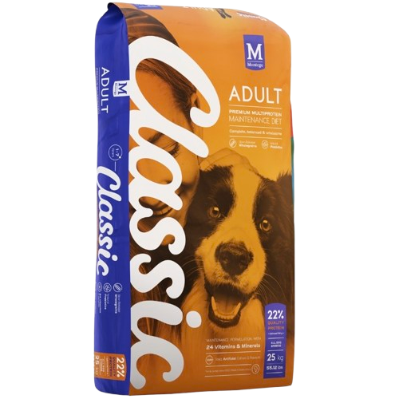

Alimentação para cãesClassic Adult
Classic Adult
25 kg
Ração Classic para cães adultos. A embalagem apresenta uma fórmula de manutenção multiproteína e contém 25 kg.
- Para cães adultos
- 25 kg
- Fórmula multiproteína
Informação da embalagem
Os detalhes essenciais, num relance.
As informações abaixo foram retiradas da frente da embalagem. Para ingredientes, dosagem e recomendações completas, confirme sempre o rótulo físico antes da compra.
Para a rotina do seu cão adulto.
Uma opção de alimentação para cães adultos. Fale com a nossa equipa para confirmar stock, preço e opções disponíveis na loja.
Precisa de orientação?
Partilhe connosco a idade, porte e necessidades do seu cão. Para dietas especiais, consulte sempre o veterinário.
Comprar na Win Win
Encontrar a ração certa pode ser simples.
Envie uma mensagem
Indique que procura a Classic Adult 25 kg e diga-nos um pouco sobre o seu cão.
Confirme o stock
A equipa confirma disponibilidade e preço antes de planear a sua visita.
Visite a loja
Passe pela Win Win Pet Shop em Maputo para levantar o produto e tirar dúvidas.